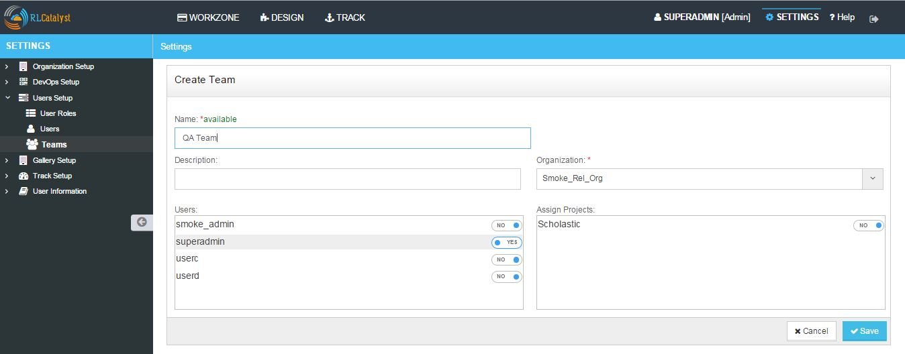

User Setup¶
About User Roles
RL Catalyst provides three types of user roles.
- Admin : Top level user of RL Catalyst
- Consumer
- Designer
These roles cannot be modified or deleted at any point of time.
User Creation
You can add, update and remove users in RL Catalyst. Follow the steps below to Add, Update and Remove users. How to add a new user?
- From the main menu click on Settings
- Once click on Settings, from the side menu click on User Setup
- Click Users
- Click on +New button provided
- Enter a login name in the Login Name box
- Enter the email address of the new user in the Email Address box
- Enter the password and confirm password fields.
- Select the Organization.
- Select the appropriate role (Admin / Designer / Consumer)
- Select the team.

- Click Save button
- New user is created
Hereby attaching a video which describes how to Create Users in Catalyst:
Teams
As soon as Organization is created 4 teams will automatically creates with organization name as Prefix. (Orgname_Admin, Orgname_DEV, Orgname_Devops and Orgname_QA).
You can add, update and remove Teams in RL Catalyst. Follow the steps below to Add, Update and Remove teams. How to add a Team?

- From the main menu click on Settings
- Once click on Settings, from the side menu click on User Setup
- Click Teams
- Click on +New button provided
- Provide a name for the team that you want to create in the Name box
- Provide a brief description of the team in the Description box
- Select the organization from the Organization drop down list
- Select the users that you want to assign to the Team
- Assign projects to the team by using the button provided in the Assign Projects box
- New Team is created
How to Update or Remove a Team
You can update or remove a Team in RL Catalyst. Follow the steps update or remove a user.
- Click on edit button to update Team details.
- Click on delete button to remove Team from the list.
Hereby attaching a video which describes how to Create Teams in Catalyst: